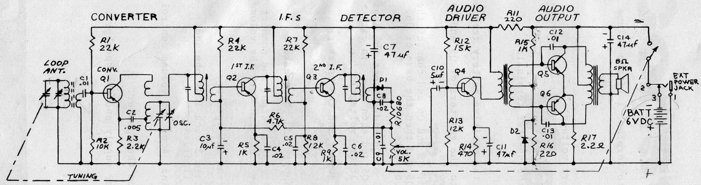
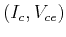
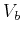
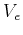
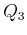
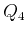

Next: About this document ...
Up: lab2
Previous: lab2
Due 5 pm, last day of class (Friday, May 1)
The schematic diagram of a transistor radio receiver is shown in the figure
below:

- Pick up the hardware of the radio receiver kit from the stock room,
including all the components and the construction manual.
- Study the diagram above carefully to understand how the receiver
works, specifically, superheterodyne receiver, frequency mixer, push-pull
output amplifier, etc. As we do not have enough time in class for in-depth
discussions of these concepts, refer to the following web sites for to gain
a better understanding:
- Predict the DC operating point  and  and  for
transistors  and .
- Construct the entire circuit. Verify the predicted values in the previous
part by actual measurement of the circuit.
Ruye Wang
2009-04-15